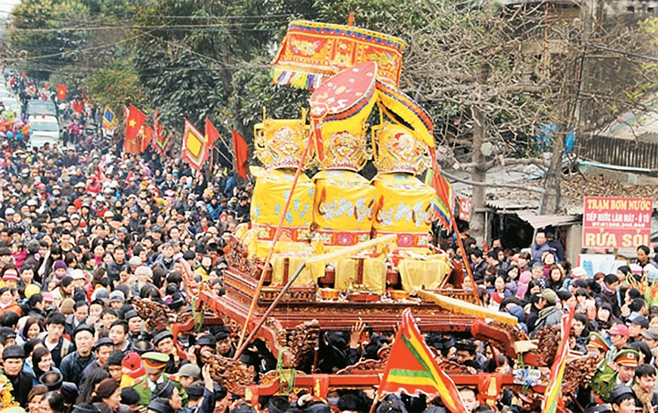

ĐỀN CHÙA - LỄ HỘI
Lễ hội Đền Và - Điểm du lịch tâm linh hấp dẫn xứ Đoài
Đền Và hay còn gọi là Đông Cung, tọa lạc tại thôn Vân Gia, phường Trung Hưng, thị xã Sơn Tây, là một trong tứ cung của xứ Đoài thờ Tản Viên Sơn Thánh - vị thần đứng đầu trong Tứ bất tử của tín ngưỡng dân gian. Đền nằm trên một quả đồi thấp rộng hơn 2.000 m2, bao quanh là hàng trăm cây lim cổ thụ. Trong đền có rất nhiều di vật quý còn được lưu giữ như: khám thờ cao 3 m có bài vị Đức Quốc mẫu, ngai tam vị gồm đức thánh và hai người em, bốn pho tượng tứ trấn, 18 đạo sắc phong, 47 đôi câu đối, 18 bức hoành phi, hai tấm bia đá.
Với những giá trị to lớn nêu trên, năm 1964, Đền Và được Nhà nước xếp hạng di tích lịch sử văn hóa cấp quốc gia. 85 cây lim cổ cùng bốn cổ thụ khác được công nhận là cây di sản. Hằng năm, vào tháng Giêng và tháng Chín, Đền Và tổ chức lễ hội đón tiếp du khách thập phương về dâng hương tỏ lòng tri ân Đức Thánh Tản. Nhưng định kỳ vào các năm: Tý, Ngọ, Mão, Dậu, nhân dân tám làng cùng thờ Đức Thánh Tản, giờ là bảy tổ dân phố ở các phường: Trung Hưng, Viên Sơn, Phú Thịnh (thị xã Sơn Tây) và thôn Duy Bình (huyện Vĩnh Tường, Vĩnh Phúc) lại cùng nhau tổ chức lễ hội lớn. Tâm điểm của lễ hội là lễ rước long ngai bài vị Tam vị Đức Thánh Tản từ thị xã Sơn Tây qua sông Hồng sang đền Ngự Dội, nằm trên địa phận thôn Duy Bình để tế lễ, rồi quay trở lại Đền Và. Lễ hội Đền Và được tổ chức không chỉ tưởng nhớ đến những công ơn của Đức Thánh Tản đối với dân, với nước, mà còn thể hiện ước nguyện của người dân về sự yên bình, ấm no hạnh phúc, đồng thời kết nối nhân dân đôi bờ tả - hữu sông Hồng thành một khối. Với những giá trị văn hóa, lịch sử quý giá, năm 2016, lễ hội Đền Và đã vinh dự được công nhận là Di sản văn hóa phi vật thể cấp quốc gia.
Những năm qua, lễ hội Đền Và luôn được chính quyền và nhân dân thị xã Sơn Tây phối hợp quản lý, tổ chức các hoạt động chu đáo, an toàn theo đúng các quy định, tạo được sự đồng thuận và ủng hộ của đông đảo nhân dân. Cụ thể như: tiếp nhận, quản lý, sử dụng nguồn công đức đúng mục đích, hiệu quả, hướng dẫn du khách hành lễ, sắp xếp các quầy hàng, dịch vụ ngăn nắp, phí viết sớ, phí trông giữ xe được niêm yết rõ ràng... Công tác bảo đảm vệ sinh môi trường, an ninh trật tự, an toàn về phòng, chống cháy nổ, chống trộm cắp cổ vật trong di tích luôn thực hiện tốt. Tuy nhiên, để di tích và lễ hội xứng đáng với các giá trị văn hóa lịch sử, tín ngưỡng, để lại ấn tượng đẹp về con người và manh đất có bề dày văn hóa, xứ Đoài cần thực hiện một số giải pháp như: bảo tồn, quản lý hướng dẫn thuyết minh, bày bán giới thiệu các mặt hàng sản phẩm lưu niệm cần được cải tiến để thực hiện tốt hơn. Công tác quảng bá cũng cần được xúc tiến mạnh hơn để tuyên truyền cho du khách. Chính quyền địa phương cần phối hợp ngành văn hóa, Hội Sử học tổ chức một số cuộc hội thảo chuyên đề nhằm tiếp thu các ý kiến đóng góp của các nhà khoa học cho công tác quản lý, bảo tồn và phát huy giá trị di tích có hiệu quả. Vào các dịp cuối tuần hay khi có lễ hội, cần tổ chức một số trò chơi dân gian truyền thống như: đấu cờ người, kéo co, thi nấu cơm, đập niêu, bắt trạch, bắn nỏ... nhằm thu hút nhân dân và khách du lịch tham gia. Đáng chú ý là cần triển khai hiệu quả quy hoạch bảo tồn và phát huy giá trị di tích Đền Và đã được phê duyệt gắn với bảo tồn di sản văn hóa phi vật thể lễ hội, để lễ hội Đền Và ngày một thu hút đông đảo du khách đến thăm và trẩy hội, xứng đáng là một trong những điểm nhấn về du lịch của vùng văn hóa xứ Đoài.